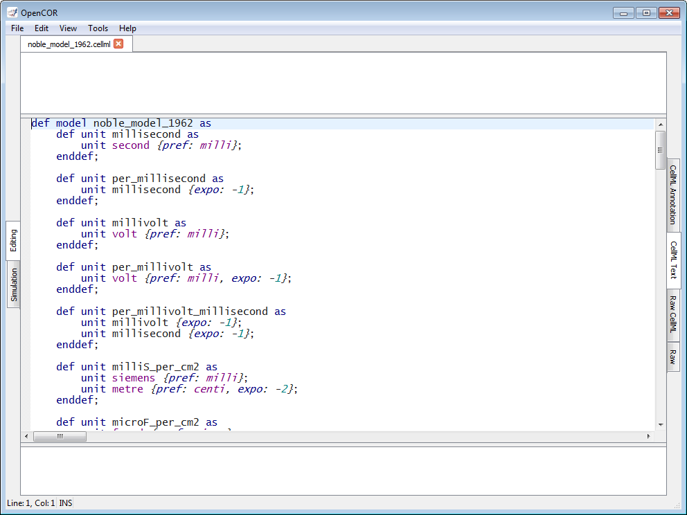

The CellMLTextView plugin can be used to edit CellML files using a text editor that supports the CellML Text format. If you open a file, it will look something like:

Apart from using a specific format, the view has the same features as the RawCellML view with one exception: currently, CellML Validation only validates against the CellML Text format.
People familiar with COR will find that the CellML Text format is backward compatible with the COR format, although it has been extended to support:
import element (i.e. support for CellML 1.1);cmeta:id attribute on all CellML elements (i.e. support for CellML annotation);degree qualifier for the diff element (i.e. support for higher-order derivatives);notanumber and infinity constants; andencapsulation and/or one containment type).The COR format has some limitations that are also present in the CellML Text format:
reaction element is not supported (its use is not only discouraged, but it has also been proposed that it be removed from the next CellML specifications);piecewise statement can only be used as part of a top-level eq statement, and nested piecewise statements are not allowed (the latter is not a limitation per se since an equation can always be rewritten without the need for nested piecewise statements; more importantly, it is easier to read and maintain an equation that uses only one top-level piecewise statement); andcomponent element may contain a set of math elements, but its rendering is such that when serialised back, only one math element will remain, with all the equations in that one and unique math element.
You can (un)comment a piece of code by pressing Ctrl+/. If no text is selected or if the selected text consists of one or several full lines, then the comment will be rendered as // XXX, e.g.
def model my_model as // A single line comment ... enddef;
Alternatively, if some text is selected and it does not consist of one or several full lines, then the comment will be rendered as /* XXX */, e.g.
def model my_/*super_duper_*/model as ... enddef;
Note that /* XXX */ comments are only for convenience and are not serialised back to CellML. Indeed, such comments can be inserted anywhere, including within an equation, e.g.
ode(V, time) = -(i_Na+i_K+i_Leak/*+i_Stim*/)/Cm;
It is therefore difficult, if not impossible, to determine where such comments should be included when serialised back.
// XXX comments can also be inserted anywhere, but unlike /* XXX */ comments they are serialised back. However, the rendering of certain elements using the CellML Text format is such that when serialised back, // XXX comments may be included in the parent element of those elements, and either before or after those elements, depending on the case.
The CellML Text format offers, for the large part, a one-to-one mapping to the CellML format with the view of making it easier to create and edit CellML files.
To define a model of name my_model, we would use:
def model my_model as ... enddef;
The model definition itself sits between as and enddef;, and can consist of imports, unit definitions, component definitions, group definitions and mapping definitions.
To define an import for units and components defined in a CellML file, which URI is my_imported_model_uri, we would use:
def import using "my_imported_model_uri" for ... enddef;
To import a unit originally named my_reference_unit and renamed my_imported_unit in our model, we would use:
unit my_imported_unit using unit my_reference_unit;
Similarly, to import a component originally named my_reference_component and renamed my_imported_component in our model, we would use:
comp my_imported_component using comp my_reference_component;
Putting everything together, we would get:
def import using "my_imported_model_uri" for unit my_imported_unit using unit my_reference_unit; comp my_imported_component using comp my_reference_component; enddef;
To define a base unit of name my_base_unit, we would use:
def unit my_base_unit as base unit;
To define a unit of name my_unit, based on some other units, we would use:
def unit my_unit as unit my_other_unit {...}; unit second {...}; unit litre {...}; unit volt {...}; ... enddef;
my_other_unit refers to a user-defined unit while second is an SI base unit, litre a convenience unit and volt an SI derived unit . The following SI base (in bold) and derived units, as well as convenience units (in italics), can be used:
| ampere | becquerel | candela | celsius | coulomb | dimensionless |
| farad | gram | gray | henry | hertz | joule |
| katal | kelvin | kilogram | liter | litre | lumen |
| lux | meter | metre | mole | newton | ohm |
| pascal | radian | second | siemens | sievert | steradian |
| tesla | volt | watt | weber |
Additional information can be provided within curly brackets. Thus, prefix, exponent, multiplier and offset values of $p$, $e$, $m$ and $o$ can be used on a unit $u$ to define a new unit equal to $m \cdot (p \cdot u)^e+o$. For example, to define my_unit as being equal to $3(milli \cdot my\_other\_unit)^{-1}+7$, we would use:
def unit my_unit as unit my_other_unit {pref: milli, expo: -1, mult: 3, off: 7}; enddef;
By default, pref, expo, mult and off have a value of $0$, $1.0$, $1.0$ and $0.0$, respectively. pref can either be an integer or have any of the following values:
| yotta | $10^{24}$ | deci | $10^{-1}$ | |
| zetta | $10^{21}$ | centi | $10^{-2}$ | |
| exa | $10^{18}$ | milli | $10^{-3}$ | |
| peta | $10^{15}$ | micro | $10^{-6}$ | |
| tera | $10^{12}$ | nano | $10^{-9}$ | |
| giga | $10^{9}$ | pico | $10^{-12}$ | |
| mega | $10^{6}$ | femto | $10^{-15}$ | |
| kilo | $10^{3}$ | atto | $10^{-18}$ | |
| hecto | $10^{2}$ | zepto | $10^{-21}$ | |
| deka | $10^{1}$ | yocto | $10^{-24}$ |
To define a component of name my_component, we would use:
def comp my_component as ... enddef;
The component definition itself sits between as and enddef;, and can consist of unit definitions, variable definitions and mathematical equations.
To define a variable of name my_variable and of unit my_unit, we would use:
var my_variable: my_unit {...};
Additional information can be provided within curly brackets: an initial value, a public interface and/or a private interface. For example, to initialise my_variable to $3$ and set its public and private interfaces to in and out, respectively, we would use:
var my_variable: my_unit {init: 3, pub: in, priv: out};
By default, init has no value (i.e. the variable is not initialised) while pub and priv have a value of none (i.e. the variable belongs to the current component and is not visible to other components in the model). init can either take a real number as a value or the name of a variable defined in the current component. Both pub and priv can take any of the following values: none, in or out.
A mathematical equation must either have an identifier or an ODE on its left hand side, i.e. $x=...$ and $\frac{dx}{dt}=...$, respectively. To write such equations, we would use:
x = ...;
and
ode(x, t) = ...;
The ODE is a first-order ODE and could also be written:
ode(x, t, 1{dimensionless})
As can be seen, the order of the ODE is specified using a constant value of unit dimensionless, which means that to write $\frac{d^2 x}{dt^2}$, $\frac{d^3 x}{dt^3}$, etc., we would use:
ode(x, t, 2{dimensionless}) ode(x, t, 3{dimensionless}) ...
The right hand side of a mathematical equation can use any of the following mathematical operators, elements and constants:
= |
Equality (assignment) | x = y |
== |
Equality (binary) | x == y |
<> |
Inequality | x <> y |
> |
Greater than | x > y |
< |
Lower than | x < y |
>= |
Greater than or equal to | x >= y |
<= |
Lower than or equal to | x <= y |
+ |
Addition | x+y |
- |
Subtraction | x-y |
* |
Multiplication | x*y |
/ |
Division | x/y |
pow |
Exponentiation (generic) | pow(x, 3{dimensionless}) pow(x, y) |
sqr |
Exponentiation (square) | sqr(x) |
root |
Root (generic) | root(x, 3{dimensionless}) root(x, y) |
sqrt |
Root (square) | sqrt(x) |
abs |
Absolute value | abs(x) |
exp |
Exponential | exp(x) |
ln |
Natural logarithm | ln(x) |
log |
Logarithm | log(x) log(x, 3{dimensionless}) log(x, y) |
floor |
Floor | floor(x) |
ceil |
Ceiling | ceil(x) |
fact |
Factorial | fact(x) |
rem |
Remainder | rem(x, 3{dimensionless}) rem(x, y) |
min |
Minimum | min(x, 3{dimensionless}) min(x, y) min(x, y, z) |
max |
Maximum | max(x, 3{dimensionless}) max(x, y) max(x, y, z) |
gcd |
Greatest common divisor | gcd(x, 3{dimensionless}) gcd(x, y) gcd(x, y, z) |
lcm |
Least common multiple | lcm(x, 3{dimensionless}) lcm(x, y) lcm(x, y, z) |
and |
And | x and y |
or |
Or | x or y |
xor |
Exclusive or | x xor y |
not |
Not | not x not(x and y) |
ode |
Differentiation | ode(x, t) ode(x, t, 2{dimensionless}) |
sinsinhasinasinh
|
Sine Hyperbolic sine Inverse sine Inverse hyperbolic sine |
sin(x) sinh(x) asin(x) asinh(x) |
coscoshacosacosh
|
Cosine Hyperbolic cosine Inverse cosine Inverse hyperbolic cosine |
cos(x) cosh(x) acos(x) acosh(x) |
tantanhatanatanh
|
Tangent Hyperbolic tangent Inverse tangent Inverse hyperbolic tangent |
tan(x) tanh(x) atan(x) atanh(x) |
secsechasecasech
|
Secant Hyperbolic secant Inverse secant Inverse hyperbolic secant |
sec(x) sech(x) asec(x) asech(x) |
csccschacscacsch
|
Cosecant Hyperbolic cosecant Inverse cosecant Inverse hyperbolic cosecant |
csc(x) csch(x) acsc(x) acsch(x) |
cotcothacotacoth
|
Cotangent Hyperbolic cotangent Inverse cotangent Inverse hyperbolic cotangent |
cot(x) coth(x) acot(x) acoth(x) |
true |
True | true |
false |
False | false |
nan |
Not a number | nan |
pi |
Pi | pi |
inf |
Infinity | inf |
e |
Euler's number | e |
A piecewise statement can also be used in the top-level of the right hand side of a mathematical equation. For example, to define $x$ as being equal to $y+z$ when $x > 0$ and $y-z$ otherwise, we would use:
x = sel case x > 0{dimensionless}: y+z; otherwise: y-z; endsel;
To define a group, we would use:
def group as ... for ... enddef;
A group must be typed as a containment and/or an encapsulation. For example, to define a containment group, we would use:
def group as containment for ... enddef;
A containment group can be named. For example, to define a containment group of name my_containment, we would use:
def group as containment my_containment for ... enddef;
An encapsulation group is always nameless, so to define an encapsulation group, we would use:
def group as encapsulation for ... enddef;
A group can have more than one type. For example, to define a group as both an encapsulation group and a containment group (of name my_containment), we would use:
def group as encapsulation and containment my_containment for ... enddef;
A group definition is used whenever there is a need for a hierarchy of components. Some components may include others. For example, to define a group where both my_component1 and my_component2 are at the top level, and where my_component1 includes my_component11, my_component12 and my_component13, we would use:
def group as ... for comp my_component1 incl comp my_component11; comp my_component12; comp my_component13; endcomp; comp my_component2; enddef;
Similarly, to define a group where my_component1 is at the top level, and where my_component1 includes my_component11 and my_component12, and where my_component11 includes my_component111, we would use:
def group as ... for comp my_component1 incl comp my_component11 incl comp my_component111; endcomp; comp my_component12; endcomp; enddef;
To define some mappings between two components of name my_component1 and my_component2, we would use:
def map between my_component1 and my_component2 for ... enddef;
To map variables my_variable1a with my_variable2a, my_variable1b with my_variable2b, and my_variable1c with my_variable2c from components my_component1 and my_component2, respectively, we would use:
def map between my_component1 and my_component2 for vars my_variable1a and my_variable2a; vars my_variable1b and my_variable2b; vars my_variable1c and my_variable2c; enddef;
The CellML Text format does not support the editing of CellML annotations. However, cmeta:id's are used to make the link between CellML elements and CellML annotations. So, we need the CellML Text format to support the use of cmeta:id's and this is done by enclosing a cmeta:id value (e.g. my_cmeta_id) within curly brackets:
which can then be used to annotate various CellML elements:
def model my_model as def import using "my_imported_model_uri" for unit my_imported_unit using unit my_reference_unit; comp my_imported_component using comp my_reference_component; enddef; def unit my_base_unit as base unit; def unit my_unit as unit my_other_unit {pref: milli, expo: -1, mult: 3, off: 7}; enddef; def comp my_component as var my_variable: my_unit {init: 3, pub: in, priv: out}; a = b+c; ode(d, t) = e+f; enddef; def group as encapsulation and containment my_containment for comp my_component1 incl comp my_component11; comp my_component12; comp my_component13; endcomp; comp my_component2; enddef; def map between my_component1 and my_component2 for vars my_variable1a and my_variable2a; vars my_variable1b and my_variable2b; vars my_variable1c and my_variable2c; enddef; enddef;